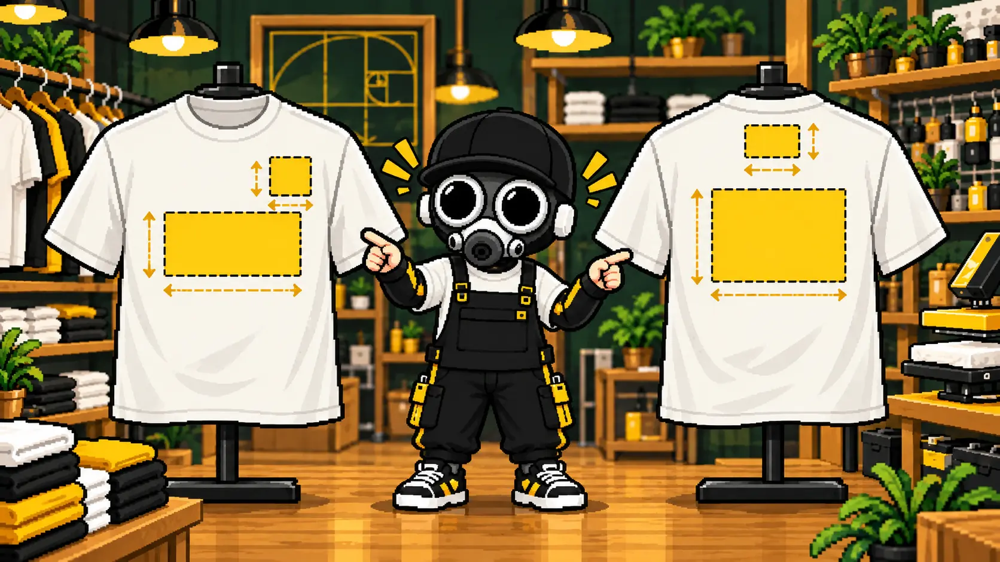
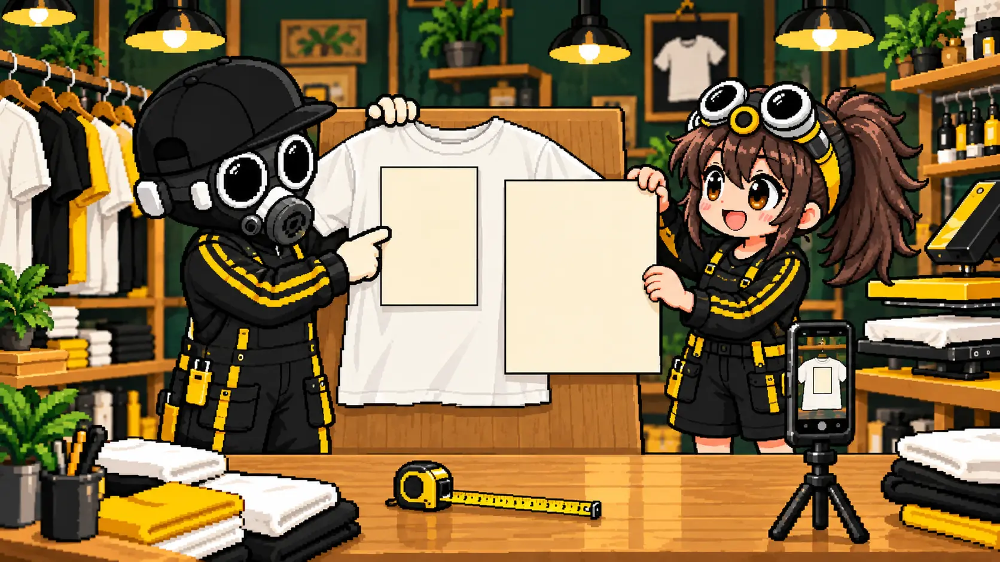
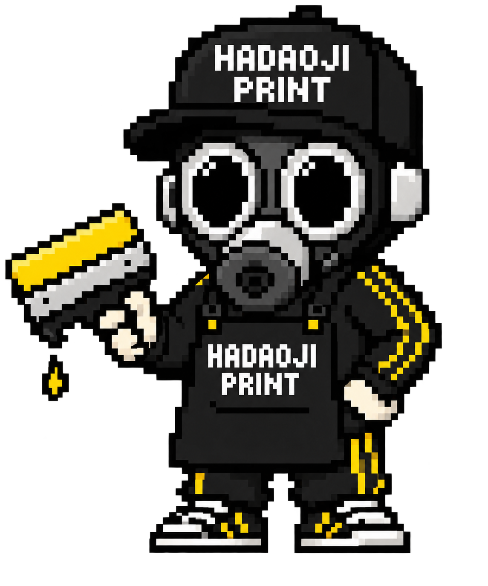
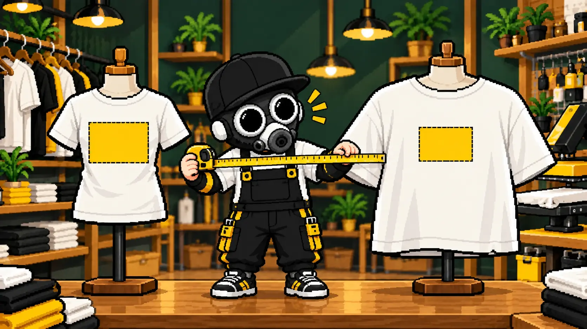

先に結論
初めて作る場合は、左胸なら横8〜10cm、胸中央なら横20〜28cm、背中なら横25〜35cmを出発点にすると考えやすくなります。ただし、デザインの縦横比やウェアのサイズで見え方は変わるため、必ず実寸で確認しましょう。
左胸
横8〜10cmロゴやワンポイント向き。小さな文字は読みにくくなるため注意します。
胸中央
横20〜28cmデザインを主役にしたい場合の定番。成人向けTシャツの目安です。
背中
横25〜35cmチーム名やイベントデザインを大きく見せたい場合に向きます。
袖
横7〜10cm番号・短い文字・小さなマーク向き。袖幅を必ず確認します。
※上記は成人向けウェアの一般的な検討目安です。プリント機材、ボディ、加工方法によって対応範囲は異なります。
先にTシャツ本体のサイズ感を決めたい方は、メーカーのサイズ表と手持ちTシャツを比べる方法から確認するとスムーズです。
前と後ろで見え方が違う

FRONT / 前面
左胸は小さく端的に、中央はデザイン全体を見せる配置です。首元に近すぎると窮屈に、低すぎると間延びして見えます。
BACK / 背面
大きな背面デザインは、肩甲骨の間から下へ収めると見えやすくなります。襟からの距離も指定しましょう。
位置は襟から測る
「胸の真ん中」のような言葉だけでは、人によってイメージが変わります。上端の位置を襟から何cm下と決め、左右中央や左胸などの基準も一緒に伝えるとズレを減らせます。
ボディの形やサイズによって基準は変わります。数値を固定ルールにせず、実際のTシャツに当てて最終確認するのが安全です。
袖・肩・襟下など定番以外へ入れたい場合は、特殊なプリント位置の注意点と実現方法も確認してください。
A4とA3で想像する
自宅にあるコピー用紙をTシャツへ当てると、プリント面積を簡単に想像できます。

21 × 29.7cm
胸中央の標準的なデザインを考えやすいサイズ。縦長・横長では実際のプリント幅が変わります。
29.7 × 42cm
背中へ大きく見せたい場合の比較に便利。ボディの小さいサイズでは収まるか確認が必要です。

紙を切ってTシャツに当て、少し離れて写真を撮ると見え方が分かりやすいよ。スマホ画面だけで決めないのがポイント！
Canvaで作る画像サイズへ換算したい場合は、プリント位置別のcm・px早見表を続けて確認できます。
SとXLで同じ幅にする？
全サイズを同じプリント幅にすると、小さいTシャツでは大きく、XLでは小さく見えます。一方、サイズごとに版やデータを変えると費用や工程が増える場合があります。まず最小サイズに収まる共通幅を決めるのが一般的です。

複数人で着る場合は、チームTシャツのサイズ・枚数・デザインをまとめる方法も役立ちます。
失敗しにくい確認方法
希望する横幅と縦幅で紙を用意します。
襟からの距離と左右のバランスを確認します。
正面から撮影し、制作側とイメージを共有します。

「大きめ」だけじゃなく、横幅○cm・襟から○cmと伝えれば、完成イメージを共有しやすいね！
1枚だけ作る場合も考え方は同じです。費用と仕上がりを含めた確認点は、オリジナルTシャツを1枚だけ作る方法にまとめています。
データの実寸を整えるにはHCGでサイズ・PPIを指定し、保存したPNGをHPSでウェアに配置して見え方を確認できます。ツール間の画像の受け渡しは保存・読み込みで行います。表示は参考イメージなので、最後は実寸と実際のウェアでも確認しましょう。
MISSION COMPLETE!
配置イメージも相談できます
デザイン画像とウェアの種類を送れば、プリント幅と位置を一緒に整理できます。
サイズと位置を相談 ▶裏公式LINEで相談する▶実際のウェアプリント相談・制作経験をもとに内容を確認しています。最終更新：2026年9月29日 運営者・編集方針